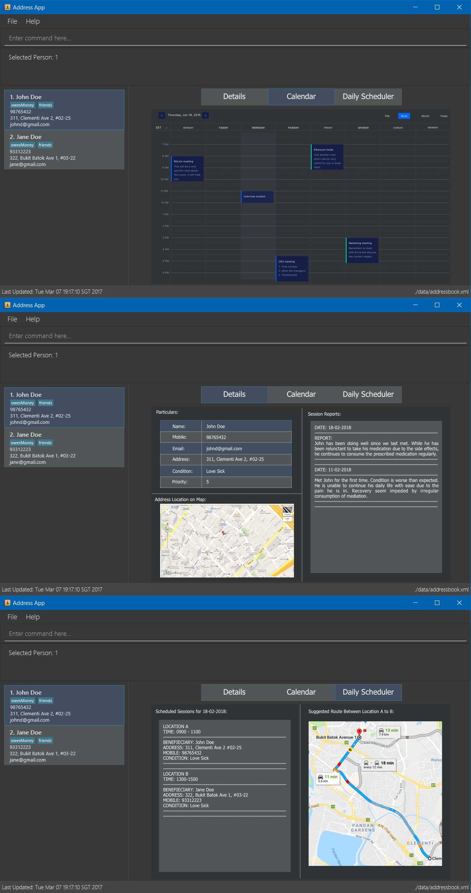

By: CS2103-T15-B3 Since: FEB 2018 Licence: MIT
1. Introduction
Session Logger and Planner (SLAP) for Social Workers is for those who prefer to use a desktop app for managing their schedule and contacts. More importantly, SLAP is optimized for those who prefer to work with a Command Line Interface (CLI) while still having the benefits of a Graphical User Interface (GUI). If you can type fast, SLAP can get your daily scheduling and contact management tasks done faster than traditional GUI apps. Interested? Jump to the Section 2, “Quick Start” to get started. Enjoy!
2. Quick Start
-
Ensure you have Java version
1.8.0_60or later installed in your Computer.Having any Java 8 version is not enough.
This app will not work with earlier versions of Java 8. -
Download the latest
slap-app.jarhere. -
Copy the file to the folder you want to use as the home folder for your Session Logger and Planner (SLAP) for Social Workers app.
-
Double-click the file to start the app. The application main window should appear in a few seconds.
-
You firstly need to create a user account with a unique username and password. (See
create-usercommand in Section 4, “Features”) -
If you do not wish to create a new user, there is a default user account available. The username is "user" and the password is "pass".
-
Login into your account using the
logincommand (See Section 4, “Features”) and using your username and password. -
If login is successful, the GUI below should appear.
Figure 1. SLAP application UI mock-up. -
Type the command in the command box and press Enter to execute it.
e.g. typinghelpand pressing Enter will open the help window. -
Some example commands you can try:
-
list: lists all contacts -
addn/John Doe p/98765432 e/johnd@example.com a/John street, block 123, #01-01: adds a contact namedJohn Doeto the Address Book. -
delete3: deletes the 3rd contact shown in the current list -
exit: exits the app
-
-
Refer to Section 4, “Features” for details of each command.
3. User Interface
The figures below show the various interfaces of SLAP. This section will help you understand the different sections of SLAP.
TODO: ADD IMAGE
Sections of the interface:
-
Beneficiary List Panel:
Displays all beneficiaries existing in the program. -
Command Box:
Takes in the input by the user. -
Command Box Notification:
Notifies the command feedback to the user. -
Features Tab:
Indicates current feature being viewed scheduled in the program. -
Details Panel:
TODO: ADD IMAGE Displays all information of a specified beneficiary including map location and previously logged session reports. -
Calendar Panel:
TODO: ADD IMAGE In-app view of Google Calendar paired. Must be logged in and given permission for calendar functions to work. -
Daily Scheduler Panel:
TODO: ADD IMAGE Displays all event information of a specified date including map proposed navigation routes between events.
4. Features
Command Format
-
Words in
UPPER_CASEare the parameters to be supplied by the user e.g. inadd n/NAME,NAMEis a parameter which can be used asadd n/John Doe. -
Items in square brackets are optional e.g
n/NAME [t/TAG]can be used asn/John Doe t/friendor asn/John Doe. -
Items with
… after them can be used multiple times including zero times e.g.[t/TAG]…can be used ast/friend,t/friend t/familyetc. -
Parameters can be in any order e.g. if the command specifies
n/NAME p/PHONE_NUMBER,p/PHONE_NUMBER n/NAMEis also acceptable.
4.1. Help Guide
4.1.1. Viewing help : help
Opens a new user guide window.
Format: help
4.2. Multi-user and Authentication
4.2.1. Create new user : create-user
Creates a new user account in the application.
Format: create-user u/USERNAME p/PASSWORD
4.2.2. Delete existing user : delete-user
Deletes an existing user account in the application.
Format: delete-user u/USERNAME p/PASSWORD
|
You will need to be logged out to use this Command. |
4.2.3. Login : login
Logs the user into the application.
Format: login u/USERNAME p/PASSWORD
4.2.4. Logout: logout
Logs the user out of the application.
Format: logout
4.2.5. Change user password: change-user-password
Change the password of an existing user in the application.
Format: change-user-password u/USERNAME p/PASSWORD newp/NEWPASSWORD
|
You will need to be logged out to use this Command. |
4.2.6. 2-Factor Authentication [Coming in v2.0]
User have to use another form of authentication to log in (most probably a one-time password).
4.3. Application Navigation
4.3.1. Switching between feature interfaces : switch
|
All |
Examples:
-
switch calendar
Switches tocalendartab and displays contents -
switch details
Switches todetailstab and displays contents
4.4. Contacts Manipulation
4.4.1. Adding a person: add
Adds a person to the address book
Format: add n/NAME p/PHONE_NUMBER e/EMAIL a/ADDRESS [t/TAG]…
| A person can have any number of tags (including 0) |
Examples:
-
add n/John Doe p/98765432 e/johnd@example.com a/John street, block 123, #01-01 -
add n/Betsy Crowe t/friend e/betsycrowe@example.com a/Newgate Prison p/1234567 t/criminal
4.4.2. Listing all persons : list
Shows a list of all persons in the address book.
Format: list
4.4.3. Editing a person : edit
Edits an existing person in the address book.
Format: edit INDEX [n/NAME] [p/PHONE] [e/EMAIL] [a/ADDRESS] [t/TAG]…
Examples:
-
edit 1 p/91234567 e/johndoe@example.com
Edits the phone number and email address of the 1st person to be91234567andjohndoe@example.comrespectively. -
edit 2 n/Betsy Crower t/
Edits the name of the 2nd person to beBetsy Crowerand clears all existing tags.
4.4.4. Locating persons by name: find
Finds persons whose names contain any of the given keywords.
Format: find KEYWORD [MORE_KEYWORDS]
Examples:
-
find John
ReturnsjohnandJohn Doe -
find Betsy Tim John
Returns any person having namesBetsy,Tim, orJohn
4.4.5. Filtering contacts by tag: filter
Filters persons whose contact contains the given tag.
Format: filter TAG
Examples:
-
filter friends
Returns any person that has the tagfriends
4.4.6. Deleting a person : delete
Deletes the specified person from the address book.
Format: delete INDEX
Examples:
-
list
delete 2
Deletes the 2nd person in the address book. -
find Betsy
delete 1
Deletes the 1st person in the results of thefindcommand.
4.4.7. Selecting a person : select
Selects the person identified by the index number used in the last person listing.
Format: select INDEX
Examples:
-
list
select 2
Selects the 2nd person in the address book. -
find Betsy
select 1
Selects the 1st person in the results of thefindcommand.
4.4.8. Listing entered commands : history
Lists all the commands that you have entered in reverse chronological order.
Format: history
|
Pressing the ↑ and ↓ arrows will display the previous and next input respectively in the command box. |
4.5. Session Reports and Logs
4.5.1. Adding a new session report: add-log
Adds a new session report/log to the person identified by the index number used in the last person listing.
Format: add-log INDEX log\LOG
Example: add-log 2 log\Today the patient reported he was feeling unwell … …
4.5.2. Delete a existing session report: delete-log [Coming in v2.0]
Deletes a particular report/log from a person.
4.5.3. Edit a new session report: delete-log [Coming in v2.0]
Edits particular report/log entries from a person.
4.6. Map Tools
4.6.1. Navigate between scheduled events : navigate
Displays the directions between planned locations on the daily scheduler map.
Format: navigate INDEX
|
Must be on |
| Number of buttons on the right of the scheduler panel map indicates how many navigation options are available. |
Examples:
-
switch scheduler
Switches tocalendartab and displays contents -
show-schedule d/5 May
Retrieves events on the 5th of May. -
navigate 1
Displays directions between the first and the second event of the day.
4.7. Calendar Tools
4.7.1. Opening a calendar : calendar-launch
|
Calling new |
4.7.2. Opening a calendar : calendar-launch
Opens a calendar in a webview.
Format: calendar-launch
|
The user can also open the calendar by pressing the The previous Logging in to the calendar interface DOES NOT perform the Oauth authentication process. |
4.7.3. Adding and event to the calendar : calendar-add
Allows a user to add an event directly to their calendar.
Format: calendar-add title/<eventname> start/<startdatetime> end/<enddatetime> loc/<location>
|
Start/End times can be written in natural language (e.g. Today, This Friday, May 4, etc.) The expected behaviour is such that if no time is provided with the date, the program will assume that the the desired time is the current time. For example, if current time is 12am and the user does not specify a start or end time for the two dates that they provide, then the application will use 12am as both the start and end time for their input dates. Similarly, if no date is provided with the time, the program will assume that the desired day was the current day. For example, if the current time is 4am, and the start date is 12am and the end date is 6am, the created event will start on the current day at 12am and end at 6am on the same day.
|
4.7.4. List upcoming events in the command line: calendar-list
Allows a user to view their upcoming calendar events.
Format: calendar-list
|
|
4.7.5. Deleting an event from the calendar : calendar-delete
Allows the user to delete an event based on the index listed from the calendar-list command.
Format: calendar-delete INDEX
|
|
4.7.6. Editing an event in the calendar : calendar-edit [coming in v2.0]
Displays a list of upcoming events to the user and lets them select one to edit.
Format: calendar-edit
4.7.7. Reauthenticate Google Oauth : reauthenticate
Allows a user to manually reauthenticate their Google Oauth credentials/permissions for SLAP.
Format: reauthenticate
|
This command is used to manually reauthenticate the Oauth certificate. The SLAP app will launch the system default browser (i.e. not a WebView) and ask them to select the account that they wish to grant the SLAP app permission to edit. Failure to authenticate will cause the program to freeze and crash. |
4.7.8. List upcoming events in the command line: show-schedule
Allows a user to view their calendar events for the current day.
Format: show-schdeule d/<date>
|
Date can be written in natural language (e.g. Today, This Friday, May 4, etc.) This command relies on Google Oauth to access the calendar. Whenever a Google Calendar-related command is executed, the Oauth certificate will be checked. If the user has not authorized the SLAP app to manage their calendar, the SLAP app will launch their system default browser (i.e. not a WebView) and ask them to select the account that they wish to grant the SLAP app permission to edit. Failure to authenticate will cause the program to freeze and crash. |
4.8. Other Tools
4.8.1. Opening the Error Log : errorlog
Opens the error log in a new window.
Format: errorlog
|
The user can also open the error log by pressing |
4.8.2. Undoing previous command : undo
Restores the address book to the state before the previous undoable command was executed.
Format: undo
|
Undoable commands: those commands that modify the address book’s content ( |
Examples:
-
delete 1
list
undo(reverses thedelete 1command) -
select 1
list
undo
Theundocommand fails as there are no undoable commands executed previously. -
delete 1
clear
undo(reverses theclearcommand)
undo(reverses thedelete 1command)
undo(reverses thedelete 1command)
4.8.3. Redoing the previously undone command : redo
Reverses the most recent undo command.
Format: redo
Examples:
-
delete 1
undo(reverses thedelete 1command)
redo(reapplies thedelete 1command) -
delete 1
redo
Theredocommand fails as there are noundocommands executed previously. -
delete 1
clear
undo(reverses theclearcommand)
undo(reverses thedelete 1command)
redo(reapplies thedelete 1command)
redo(reapplies theclearcommand)
4.8.4. Clearing all entries : clear
Clears all entries from the address book.
Format: clear
4.8.5. Exiting the program : exit
Exits the program.
Format: exit
4.9. Exporting
4.9.1. Export SLAP : export-patients [coming in v2.0]
Exports your SLAP into a file so that it can be transported across operating systems or devices.
4.10. Storage Features
4.10.1. Saving the data
SLAP data are saved in the hard disk automatically after any command that changes the data.
There is no need to save manually.
4.10.2. Encrypting data files [coming in v2.0]
Encryption should be done automatically when SLAP is logged out or is exited.
5. FAQ
Q: How do I transfer my data to another Computer?
A: Install the app in the other computer and overwrite the empty data file it creates with the file that contains the data of your previous Address Book folder.
6. Command Summary
-
Help Guide :
help -
Create New User :
create-user u/USERNAME p/PASSWORD -
Delete Existing User :
delete-user u/USERNAME p/PASSWORD -
Change Password of Existing User :
change-user-password u/USERNAME p/PASSWORD newp/NEWPASSWORD -
Login :
login u/USERNAME p/PASSWORD -
Logout :
logout -
Add
add n/NAME p/PHONE_NUMBER e/EMAIL a/ADDRESS [t/TAG]…
e.g.add n/James Ho p/22224444 e/jamesho@example.com a/123, Clementi Rd, 1234665 t/friend t/colleague -
Clear :
clear -
Delete :
delete INDEX
e.g.delete 3 -
Edit :
edit INDEX [n/NAME] [p/PHONE_NUMBER] [e/EMAIL] [a/ADDRESS] [t/TAG]…
e.g.edit 2 n/James Lee e/jameslee@example.com -
Find :
find KEYWORD [MORE_KEYWORDS]
e.g.find James Jake -
List :
list -
Add Session Reports/Logs :
add-log INDEX log/LOGCONTENT -
Calendar Launch :
calendar-launch[Since v1.1] [Updated v1.4] -
Calendar List :
calendar-list[Since v1.2] -
Calendar Add :
calendar-add title/<eventname> start/<startdatetime> end/<enddatetime> loc/<location> lp/<linkedperson>(optional)[Since v1.3] [Updated v1.4] -
Calendar Delete :
calendar-delete INDEX[Since v1.4] -
Show Schedule :
show-schedule d/<date>[Since v1.4] -
Error :
errorlog[Since v1.2] -
Select :
select INDEX
e.g.select 2 -
History :
history -
Switch :
switch FEATURE
e.g.switch scheduler -
Navigate :
navigate INDEX
e.g.navigate 2 -
Undo :
undo -
Redo :
redo